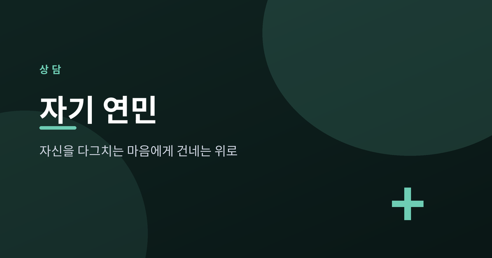
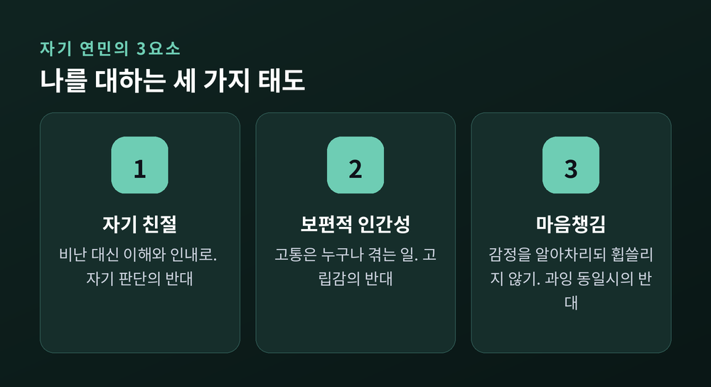
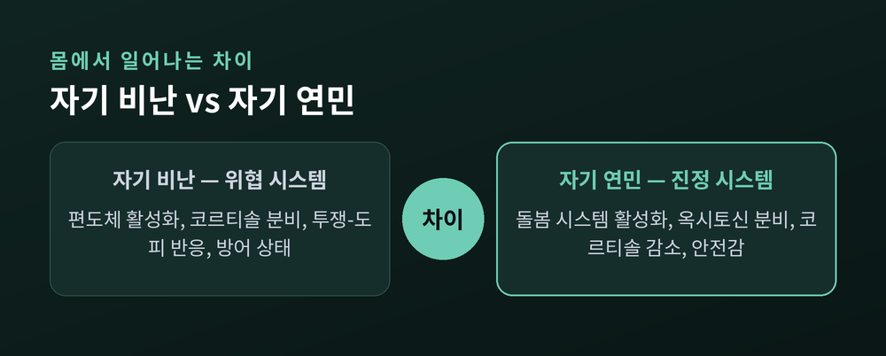
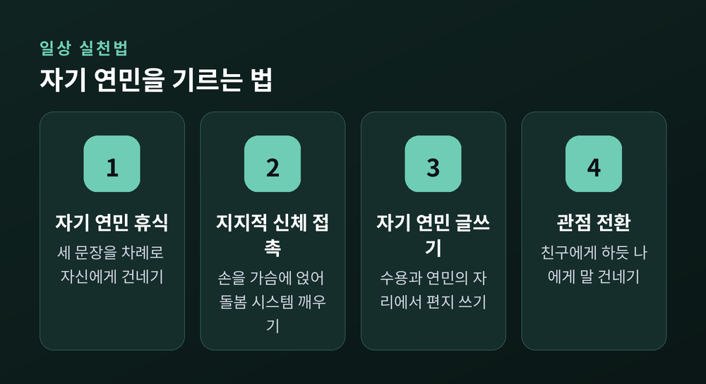

오늘은 자기 연민(self-compassion)에 대해 이야기해 보려 합니다. 실수하거나 부족함을 느낄 때 스스로를 가장 매섭게 다그치는 사람은 대개 자기 자신입니다. 자기 연민은 그 가혹한 목소리 대신, 힘든 순간의 나에게 따뜻함을 건네는 태도입니다.
먼저 결론부터 말씀드립니다. 자기 연민은 자기 합리화도, 나약함도 아닙니다. 여러 연구에서 자기 연민은 불안과 우울을 낮추고 회복탄력성을 높이는 것과 연관되었습니다. 그 정의와 근거, 그리고 일상에서 기르는 방법을 차례로 정리하겠습니다.
자기 연민은 미국 텍사스대학교 심리학자 크리스틴 네프(Kristin Neff) 박사가 2003년 학술적으로 개념화한 개념입니다. 네프는 자기 연민을 "고통스러운 감정을 느낄 때, 특히 그럴 때 자신의 현재 내적 경험을 따뜻함과 다정함으로 알아차리는 것"으로 정의합니다.
자기 연민은 세 가지 핵심 요소로 이루어집니다.

네프는 후속 연구에서 자기 연민이 두 얼굴을 가진다고 설명합니다. 하나는 자기 수용과 위로를 향하는 부드러운(tender) 자기 연민, 다른 하나는 자기 보호와 변화의 동기를 향하는 강인한(fierce) 자기 연민입니다. 자신을 다독이는 일과 자신을 위해 나서는 일은 결국 한 뿌리에서 나옵니다.
흔히 자기 연민을 자존감과 비슷한 말로 여깁니다. 그러나 둘은 분명히 구별됩니다.
자존감은 자신을 얼마나 긍정적으로 *평가*하는가의 정도이며, 종종 타인과의 비교에 기반합니다. 반면 자기 연민은 자신을 평가하기보다 친절하게 대하고, 공통된 인간성을 인식하며, 부정적인 면을 볼 때 마음챙김을 유지하는 태도입니다.
근거도 있습니다. 3,000명 이상을 대상으로 한 대규모 조사에서, 자기 연민은 8개월간 12회에 걸쳐 측정한 자기 가치감이 자존감보다 훨씬 더 안정적인 것과 연관되었습니다. 자기 연민은 외모나 성공적 수행 같은 조건에 덜 좌우되었고, 자존감과 동일한 이점을 제공하면서도 그 단점은 없었습니다. 자존감이 사회적 비교나 자기 반추, 나르시시즘과 정적 상관을 보인 것과 달리, 자기 연민은 이 특성들과 더 강한 부적 상관을 보였습니다.
정리하자면 이렇습니다. 자존감은 "내가 남보다 낫다"는 평가에 기대지만, 자기 연민은 평가 자체를 내려놓습니다.
자기 비난과 자기 연민의 차이는 마음에만 있지 않습니다. 몸의 반응부터 다릅니다.
자기 비난은 뇌의 위협 시스템을 자극합니다. 편도체를 활성화하고 스트레스 호르몬인 코르티솔을 분비시키며, 투쟁-도피 반응을 일으켜 몸을 방어 상태에 머물게 합니다.
자기 연민은 다른 길을 엽니다. 포유류의 돌봄·애착 시스템을 활성화해 위협 상태에서 안전감으로 전환시킵니다. 이때 코르티솔이 감소하고 심박변이도와 일관성이 증가하는데, 이는 평온함과 정서적 회복탄력성의 지표입니다. 자기 연민의 감정은 옥시토신 분비와도 연관됩니다.

예전에는 자신을 몰아붙여야 정신을 차린다고 여겼습니다. 그러나 위협 반응에 갇힌 몸은 오히려 위축됩니다. 채찍이 늘 힘이 되는 것은 아닙니다.
자기 연민을 권할 때 따라오는 망설임이 있습니다. 연구와 전문가의 반박을 함께 보겠습니다.
여러 메타분석이 자기 연민의 효과를 일관되게 보고합니다.
한 메타분석은 자기 연민과 정신병리 사이에서 큰 효과크기(r = −0.54)를 발견했습니다. 자기 연민이 높을수록 불안·우울 같은 증상이 낮았다는 뜻입니다. 22개 무작위 대조 시험을 분석한 연구에서는 자기 연민 관련 치료가 불안(g = 0.46)과 우울 증상(g = 0.40)에서 더 큰 개선을 보였습니다. 또한 자기 연민은 회복탄력성, 행복, 낙관성을 높이고 과도한 자기 비판과 반추를 줄이는 것과 연관됩니다.
다만 한 가지는 신중히 짚겠습니다. 16개 연구 기반의 최신 메타분석은 자기 친절·보편적 인간성·마음챙김 같은 긍정적 요소가 완만한 보호 효과를 보인 반면, 자기 판단·고립·과잉 동일시 같은 부정적 요소는 더 큰 취약성 효과를 보였다고 밝혔습니다. 좋은 태도를 더하는 일만큼이나, 자신을 깎아내리는 습관을 덜어내는 일이 중요할 수 있다는 의미입니다.
거창한 결심이 아니라 작은 연습에서 시작합니다. 전문기관이 제시하는 근거 기반 방법을 추려 정리합니다.

1. 자기 연민 휴식(Self-Compassion Break)
힘든 순간에 세 문장을 차례로 자신에게 건넵니다.
2. 지지적 신체 접촉(Supportive Touch)
손을 통한 접촉은 돌봄 시스템을 활성화하고 옥시토신 분비를 유도하며 코르티솔을 낮춥니다. 양손을 가슴에 얹거나, 얼굴을 두 손으로 감싸거나, 자기 손을 잡아 봅니다. 두려움이나 깊은 감정이 올라올 때는 두 손을 명치 위에 얹어 자신의 중심을 안아주듯 지지하면 특히 위로가 됩니다.
3. 자기 연민 글쓰기
마음에 들지 않는 점에 대해 수용과 연민의 자리에서 자신에게 편지를 써 봅니다. 하루 중 힘들었던 일을 마음챙김·보편적 인간성·자기 친절의 관점에서 일기로 적어 보는 것도 좋습니다.
4. "친구에게 하듯" 관점 전환
같은 어려움을 겪는 친한 친구에게는 어떤 말을 건넬지 떠올려 봅니다. 그리고 그 따뜻한 말을 자신에게 똑같이 건넵니다. 자기 비판과 친구를 대하는 태도의 거리를 좁히는 연습입니다.
여기서 한 가지를 분명히 짚어 두려 합니다.
이 글은 일반적인 정보 제공을 위한 것으로, 전문적인 상담이나 치료를 대체하지 않습니다. 자기 연민 연습은 우울·불안·PTSD 같은 정신질환에 대한 전문 치료를 대신하지 못합니다. 오히려 연습 과정에서 억눌렸던 감정이 떠올라 고통스럽게 느껴질 수 있습니다. 그럴 때는 정신건강 전문가의 도움을 구하는 것이 중요합니다.
자기 연민은 전문 상담·치료와 함께 활용할 때 가장 효과적입니다. 마음의 어려움이 지속되거나 일상에 지장을 줄 정도라면, 망설이지 말고 전문가의 도움을 받으시길 권합니다.
끝으로 한 마디만 더 드리겠습니다.
자기 연민은 자신을 봐주는 일이 아니라, 자신과 다시 편이 되는 일입니다.
오늘 또 스스로를 다그치고 있다면, 같은 일을 겪는 친구에게 건넬 말을 떠올려 보시길 권합니다. 그 말을 자신에게도 건넬 수 있다면, 그것으로 이미 한 걸음입니다.